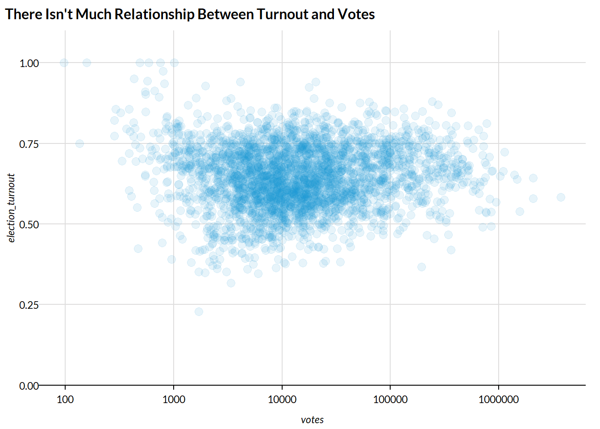
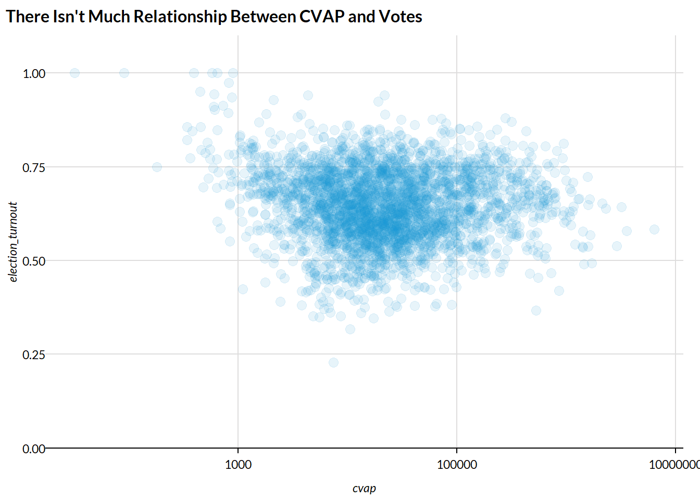
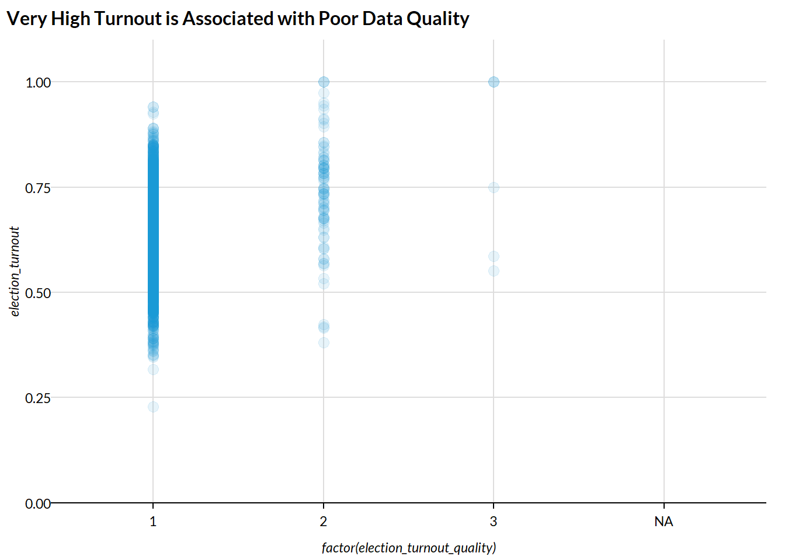
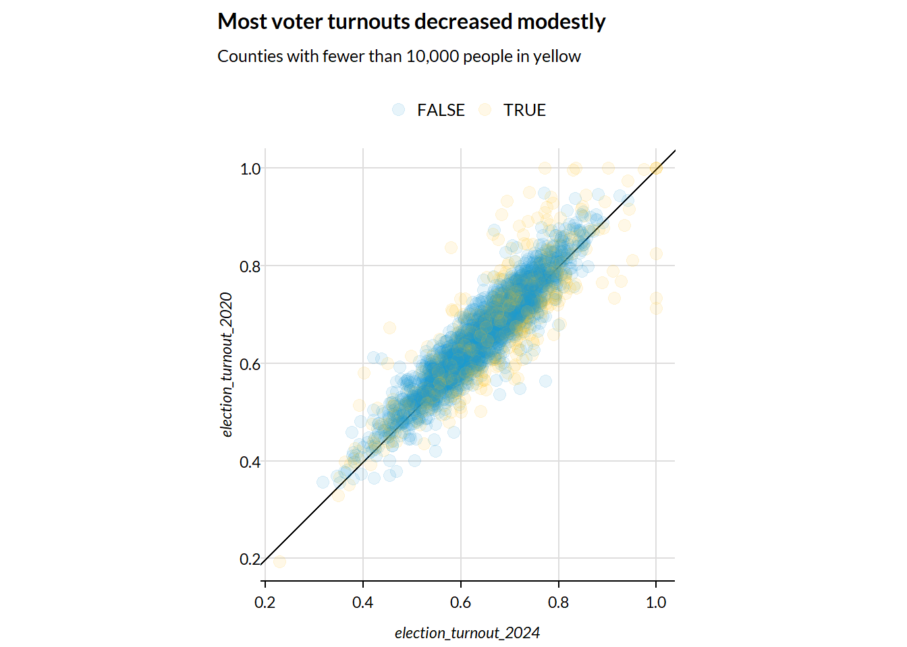
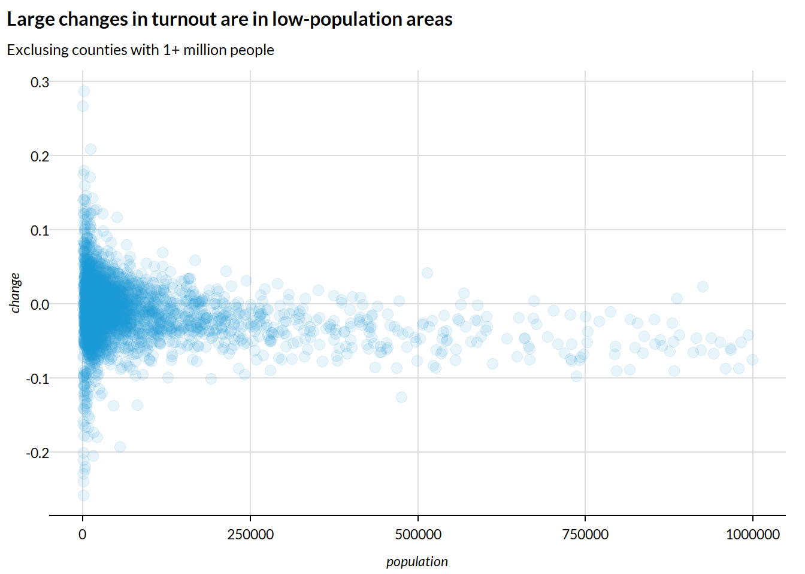

options(scipen = 999)
library(tidyverse)
library(urbnthemes)
library(sf)
library(rvest)
set_urbn_defaults(style = "print")Voter Turnout 2024
Voter Turnout
This metric is a county-level estimate of voter turnout. We use Presidential Election turnout as a measure of “Highest Office” for the numerator. We use the Citizen Voting Age Population (CVAP) for the denominator.
See the United States Elections Project for more information.
1. Numerator
1.1 MIT Election Data and Science Lab
We use the MIT Election Data and Science Lab for county-level votes in the 2024 Presidential election (data here). First, we download the data.
To download the data manually, go to this link. On the right side of the page, click “Access Dataset” and under “Download Options” select “Original Format ZIP.” Complete the License/Data Use Agreement by providing your name, email, institution, and position, and then click “Accept.” Once you’ve downloaded the data, unzip the file and move it into the 21_political-participation/voter-turnout/data/mit directory.
Alternatively, from the landing page, scroll down to the file list and right click on the tabular data file (e.g., countypres_2000-2024.tab for 2024 - the only other file is an md file). Select “Copy Link Address.” This link should include a 7 digit string after fileID=. Replace the 7 digit string in the download.file() command below with the new string (between datafile/ and ?format=). This will download the data directly.
# create a data folder for intermediate data files
intermediate_files <- here::here("21_political-participation",
"data")
if (!dir.exists(intermediate_files)) {
dir.create(intermediate_files)
}
# download the data from the Harvard dataverse
mit_directory <- here::here("21_political-participation",
"data",
"mit")
mit_data <- here::here("21_political-participation",
"data",
"mit",
"countypres_2000-2024.csv")
if (!dir.exists(mit_directory)) {
dir.create(mit_directory)
}
if (!file.exists(mit_data)) {
download.file(
"https://dataverse.harvard.edu/api/access/datafile/13573089?format=original&gbrecs=true",
destfile = mit_data
)
}Next we load and clean the data.
mit <- read_csv(here::here("21_political-participation",
"data",
"mit",
"countypres_2000-2024.csv")) %>%
# rename the FIPS code variable to match 2016
rename(FIPS = county_fips) %>%
mutate(FIPS = as.character(FIPS),
FIPS = str_pad(FIPS, width = 5, side = "left", pad = "0"))Filter for year 2024 and keep only relevant variables.
mit <- mit %>%
tidylog::filter(year == 2024) %>%
select(state, county_name, year, state_po, FIPS, mode, candidatevotes, totalvotes) Shannon County, South Dakota (FIPS 46113) changed to Oglala Lakota County, South Dakota (FIPS 46102) in 2015. The MIT data have the correct county name but they do not have the correct FIPS code.
In 2019 there were 3,220 counties in the US including Washington DC and Puerto Rico. In 2020, the Valdez-Cordova Census Area in Alaska (FIPS 02261) has been split into two new Census Areas/FIPS: Copper River Census Area (FIPS 02066) and Chugach Census Area (FIPS 02063), so there are now 3,221 counties. However, as discussed later, Alaska is reported as Districts instead of counties, so we standardize the FIPS codes for all Alaska districts to “02000” - thus, we don’t need to worry about the county change in Alaska.
mit %>%
filter(FIPS %in% c("46113", "46102"))# A tibble: 4 × 8
state county_name year state_po FIPS mode candidatevotes totalvotes
<chr> <chr> <dbl> <chr> <chr> <chr> <dbl> <dbl>
1 SOUTH DAKOTA OGLALA LAKO… 2024 SD 46113 VOTE… 17 3062
2 SOUTH DAKOTA OGLALA LAKO… 2024 SD 46113 VOTE… 406 3062
3 SOUTH DAKOTA OGLALA LAKO… 2024 SD 46113 VOTE… 2567 3062
4 SOUTH DAKOTA OGLALA LAKO… 2024 SD 46113 VOTE… 72 3062mit <- mit %>%
mutate(FIPS = if_else(FIPS == "46113", "46102", FIPS))In prior years there were nine observations without FIPS codes originating from the District of Columbia and a county in Rhode Island formerly titled “FEDERAL PRECINCT.” The census corrected this in the 2024 data and there are no longer any cases with missing fips.
There are some missing observations for candidatevotes but none for totalvotes and no observations for which totalvotes is 0.
mit %>%
filter(is.na(candidatevotes))# A tibble: 37 × 8
state county_name year state_po FIPS mode candidatevotes totalvotes
<chr> <chr> <dbl> <chr> <chr> <chr> <dbl> <dbl>
1 NEW MEXICO CATRON 2024 NM 35003 ABSENT… NA 2354
2 NEW MEXICO CATRON 2024 NM 35003 EARLY NA 2354
3 NEW MEXICO CIBOLA 2024 NM 35006 EARLY NA 8977
4 NEW MEXICO CIBOLA 2024 NM 35006 ABSENT… NA 8977
5 NEW MEXICO COLFAX 2024 NM 35007 ABSENT… NA 5813
6 NEW MEXICO DE BACA 2024 NM 35011 EARLY NA 867
7 NEW MEXICO DE BACA 2024 NM 35011 ELECTI… NA 867
8 NEW MEXICO DE BACA 2024 NM 35011 TOTAL NA 867
9 NEW MEXICO DE BACA 2024 NM 35011 ABSENT… NA 867
10 NEW MEXICO EDDY 2024 NM 35015 ABSENT… NA 23472
# ℹ 27 more rowsmit %>%
filter(is.na(totalvotes))# A tibble: 0 × 8
# ℹ 8 variables: state <chr>, county_name <chr>, year <dbl>, state_po <chr>,
# FIPS <chr>, mode <chr>, candidatevotes <dbl>, totalvotes <dbl>mit %>%
filter(totalvotes == 0)# A tibble: 0 × 8
# ℹ 8 variables: state <chr>, county_name <chr>, year <dbl>, state_po <chr>,
# FIPS <chr>, mode <chr>, candidatevotes <dbl>, totalvotes <dbl>Alaska is reported as Districts instead of counties. We replace the FIPS codes for all Alaska observations with 02000.
mit <- mit %>%
mutate(FIPS = if_else(state == "ALASKA", "02000", FIPS))
mit %>%
filter(state == "ALASKA") %>%
select(state, FIPS)# A tibble: 164 × 2
state FIPS
<chr> <chr>
1 ALASKA 02000
2 ALASKA 02000
3 ALASKA 02000
4 ALASKA 02000
5 ALASKA 02000
6 ALASKA 02000
7 ALASKA 02000
8 ALASKA 02000
9 ALASKA 02000
10 ALASKA 02000
# ℹ 154 more rowsThere are several states where the summarized candidate votes consistently don’t sum to the county votes.
mit %>%
group_by(state, county_name, FIPS) %>%
summarize(candidatevotes = sum(candidatevotes),
totalvotes = max(totalvotes),
.groups = 'drop') %>%
filter(totalvotes != candidatevotes)# A tibble: 863 × 5
state county_name FIPS candidatevotes totalvotes
<chr> <chr> <chr> <dbl> <dbl>
1 ARIZONA APACHE 04001 65370 32685
2 ARIZONA COCHISE 04003 119002 59501
3 ARIZONA COCONINO 04005 72577 70993
4 ARIZONA GILA 04007 55958 27979
5 ARIZONA GRAHAM 04009 29791 15327
6 ARIZONA GREENLEE 04011 6682 3341
7 ARIZONA LA PAZ 04012 15400 7700
8 ARIZONA MOHAVE 04015 222710 111355
9 ARIZONA NAVAJO 04017 102495 51386
10 ARIZONA PIMA 04019 1040634 520317
# ℹ 853 more rowsThis is because in 2024 MIT introduced the vote mode variable. The voting mode categories differ by state in the 2024 data. For some states this includes an additional “total vote” row which results in duplicates when summed.
The table below shows the differences in state mode categories. Some states have “total votes” alone while others have a combination of modes. Some have NA.
mit %>%
select(state, mode, candidatevotes) %>%
unique() %>%
group_by(state, mode) %>%
summarise(category_apperance = n(),
candidate_votes = sum(candidatevotes)) %>%
reactable::reactable(
filterable = TRUE,
defaultPageSize = 6
)The ‘totalvotes’ column provides a clean version of the county total votes. To clean the data we drop the candidate votes from the dataset and keep unique rows. This results in one row per county.
We also create state and county.
mit_counties <- mit %>%
select(year, state, county_name, FIPS, totalvotes) %>%
unique() %>%
rename(votes = totalvotes)
# create state and county
mit_counties <- mit_counties %>%
mutate(state = str_sub(FIPS, 1, 2),
county = str_sub(FIPS, 3, 5)) %>%
select(year,
state,
county,
votes)Turnout comparisons
We compare the aggregated totals to the state total posted on Wikipedia and with totals published by the Census.
Wikipedia
This code scrapes the vote count from Wikipedia:
# scrape data from Wikipedia with rvest
wiki <- read_html("https://en.wikipedia.org/wiki/2024_United_States_presidential_election")
wiki_votes <- wiki %>%
html_elements("td:nth-child(23)") %>%
html_text() %>%
# clean numbers as characters to numerics
str_replace_all(",", "") %>%
str_replace_all("\n", "") %>%
as.numeric()
# the name column in the data doesn't scrape well so we manually state it
state <- c(state.name[1:8],
'District of Columbia',
state.name[9:19],
rep('subset', 2),
state.name[20:27],
rep('subset', 3),
state.name[28:50]
)
state_votes <- tibble(state, wiki_votes) %>%
tidylog::filter(state != "subset")
rm(wiki, wiki_votes, state)The totals are very close for most states. Vermont and Missouri have the biggest differences.
# compare the scraped data to the mit data
mit_counties %>%
group_by(state) %>%
summarize(mit_votes = sum(votes, na.rm = TRUE)) %>%
bind_cols(state_votes) %>%
mutate(mit_votes / wiki_votes) %>%
select(state = state...3, mit_votes, wiki_votes, `mit_votes/wiki_votes`) %>%
arrange(`mit_votes/wiki_votes`) %>%
knitr::kable(digits = 3)| state | mit_votes | wiki_votes | mit_votes/wiki_votes |
|---|---|---|---|
| Missouri | 2871039 | 2995327 | 0.959 |
| Maine | 824806 | 831375 | 0.992 |
| Nebraska | 947159 | 952182 | 0.995 |
| Virginia | 4482576 | 4505941 | 0.995 |
| Pennsylvania | 7034206 | 7058732 | 0.997 |
| Rhode Island | 511816 | 513386 | 0.997 |
| Delaware | 511697 | 512912 | 0.998 |
| Colorado | 3190873 | 3192745 | 0.999 |
| West Virginia | 762390 | 762582 | 1.000 |
| California | 15862678 | 15865475 | 1.000 |
| Georgia | 5250047 | 5250905 | 1.000 |
| Alabama | 2264972 | 2265090 | 1.000 |
| Montana | 602963 | 602990 | 1.000 |
| New Mexico | 923362 | 923403 | 1.000 |
| Alaska | 338177 | 338177 | 1.000 |
| Arkansas | 1182676 | 1182676 | 1.000 |
| Connecticut | 1759010 | 1759010 | 1.000 |
| Florida | 10893752 | 10893752 | 1.000 |
| Hawaii | 516701 | 516701 | 1.000 |
| Idaho | 905057 | 905057 | 1.000 |
| Illinois | 5633310 | 5633310 | 1.000 |
| Indiana | 2936677 | 2936677 | 1.000 |
| Kansas | 1327591 | 1327591 | 1.000 |
| Kentucky | 2074530 | 2074530 | 1.000 |
| Louisiana | 2006975 | 2006975 | 1.000 |
| Maryland | 3038334 | 3038334 | 1.000 |
| Massachusetts | 3473668 | 3473668 | 1.000 |
| Michigan | 5664186 | 5664186 | 1.000 |
| Minnesota | 3253920 | 3253920 | 1.000 |
| Mississippi | 1228008 | 1228008 | 1.000 |
| Nevada | 1484840 | 1484840 | 1.000 |
| New Hampshire | 826189 | 826189 | 1.000 |
| New Jersey | 4272725 | 4272725 | 1.000 |
| North Carolina | 5699141 | 5699141 | 1.000 |
| North Dakota | 368155 | 368155 | 1.000 |
| Ohio | 5767788 | 5767788 | 1.000 |
| Oklahoma | 1566173 | 1566173 | 1.000 |
| Oregon | 2244493 | 2244493 | 1.000 |
| South Carolina | 2548140 | 2548140 | 1.000 |
| South Dakota | 428922 | 428922 | 1.000 |
| Tennessee | 3063942 | 3063942 | 1.000 |
| Texas | 11388674 | 11388674 | 1.000 |
| Utah | 1488494 | 1488494 | 1.000 |
| Washington | 3924243 | 3924243 | 1.000 |
| Wisconsin | 3422918 | 3422918 | 1.000 |
| Wyoming | 269048 | 269048 | 1.000 |
| District of Columbia | 325879 | 325869 | 1.000 |
| Iowa | 1674011 | 1663506 | 1.006 |
| Arizona | 3412953 | 3390161 | 1.007 |
| Vermont | 372885 | 369422 | 1.009 |
| New York | 8386783 | 8262495 | 1.015 |
The aggregated nationwide total from MIT of 155,209,552 is also very close to the 155,240,955 votes reported on Wikipedia. We have just over 34k less votes than Wikipedia.
state_votes %>%
summarize(sum(wiki_votes))# A tibble: 1 × 1
`sum(wiki_votes)`
<dbl>
1 155240955mit_counties %>%
summarize(sum(votes, na.rm = TRUE))# A tibble: 1 × 1
`sum(votes, na.rm = TRUE)`
<dbl>
1 155209552There are no missing values.
mit_counties %>%
map_dbl(~sum(is.na(.))) year state county votes
0 0 0 0 Census
Read in Census data on 2024 election turnout. The census releases the “P20” table every two years following national level elections.
“Since 1964, the U.S. Census Bureau has fielded the Voting and Registration supplement to the CPS every 2 years in November. While the Census Bureau has collected voting and registration data since 1964, the CPS has gathered citizenship data for congressional voting only since 1978. The CPS is the only source of voting and registration data produced by the U.S. Census Bureau.”
#Specify the URL of the Excel file from the Census website
excel_url <- "https://www2.census.gov/programs-surveys/cps/tables/p20/587/vote04a_2024.xlsx" # Replace with latest year if updating
#Download the file to a temporary location
httr::GET(excel_url, httr::write_disk(tf <- tempfile(fileext = ".xlsx")))Response [https://www2.census.gov/programs-surveys/cps/tables/p20/587/vote04a_2024.xlsx]
Date: 2026-02-25 21:58
Status: 200
Content-Type: application/vnd.openxmlformats-officedocument.spreadsheetml.sheet
Size: 15.9 kB
<ON DISK> C:\Users\jwalsh\AppData\Local\Temp\Rtmpegdhez\file6e2c5bcf494f.xlsx#Read the data from the temporary file into a data frame
census_voting_pop <- readxl::read_xlsx(tf, skip = 3) %>%
select(state = Characteristic, voting_age_pop = `Total population`, census_votes = Voted) %>%
filter(!state %in% c("UNITED STATES", NA_character_),
!is.na(census_votes)) %>%
mutate(state = str_to_title(state),
state = ifelse(str_detect(state, "District"), "District of Columbia", state),
census_votes = as.numeric(census_votes),
census_votes = census_votes * 1000,
voting_age_pop = as.numeric(voting_age_pop),
voting_age_pop = voting_age_pop * 1000)The census vote counts show more variability and often do not directionally agree with the Wikipedia votes.
# compare the data sources
mit_counties %>%
group_by(state) %>%
summarize(mit_votes = sum(votes, na.rm = TRUE)) %>%
bind_cols(state_votes, census_voting_pop) %>%
mutate(mit_votes / wiki_votes,
mit_votes / census_votes) %>%
select(state = state...3, mit_votes, wiki_votes, `mit_votes/wiki_votes`, census_votes, `mit_votes/census_votes`) %>%
arrange(`mit_votes/wiki_votes`) %>%
knitr::kable(digits = 3)| state | mit_votes | wiki_votes | mit_votes/wiki_votes | census_votes | mit_votes/census_votes |
|---|---|---|---|---|---|
| Missouri | 2871039 | 2995327 | 0.959 | 3240000 | 0.886 |
| Maine | 824806 | 831375 | 0.992 | 753000 | 1.095 |
| Nebraska | 947159 | 952182 | 0.995 | 928000 | 1.021 |
| Virginia | 4482576 | 4505941 | 0.995 | 4565000 | 0.982 |
| Pennsylvania | 7034206 | 7058732 | 0.997 | 6828000 | 1.030 |
| Rhode Island | 511816 | 513386 | 0.997 | 568000 | 0.901 |
| Delaware | 511697 | 512912 | 0.998 | 521000 | 0.982 |
| Colorado | 3190873 | 3192745 | 0.999 | 2997000 | 1.065 |
| West Virginia | 762390 | 762582 | 1.000 | 807000 | 0.945 |
| California | 15862678 | 15865475 | 1.000 | 16385000 | 0.968 |
| Georgia | 5250047 | 5250905 | 1.000 | 4908000 | 1.070 |
| Alabama | 2264972 | 2265090 | 1.000 | 2219000 | 1.021 |
| Montana | 602963 | 602990 | 1.000 | 610000 | 0.988 |
| New Mexico | 923362 | 923403 | 1.000 | 984000 | 0.938 |
| Alaska | 338177 | 338177 | 1.000 | 324000 | 1.044 |
| Arkansas | 1182676 | 1182676 | 1.000 | 1200000 | 0.986 |
| Connecticut | 1759010 | 1759010 | 1.000 | 1729000 | 1.017 |
| Florida | 10893752 | 10893752 | 1.000 | 9703000 | 1.123 |
| Hawaii | 516701 | 516701 | 1.000 | 587000 | 0.880 |
| Idaho | 905057 | 905057 | 1.000 | 932000 | 0.971 |
| Illinois | 5633310 | 5633310 | 1.000 | 5817000 | 0.968 |
| Indiana | 2936677 | 2936677 | 1.000 | 2912000 | 1.008 |
| Kansas | 1327591 | 1327591 | 1.000 | 1443000 | 0.920 |
| Kentucky | 2074530 | 2074530 | 1.000 | 2152000 | 0.964 |
| Louisiana | 2006975 | 2006975 | 1.000 | 1897000 | 1.058 |
| Maryland | 3038334 | 3038334 | 1.000 | 3091000 | 0.983 |
| Massachusetts | 3473668 | 3473668 | 1.000 | 3408000 | 1.019 |
| Michigan | 5664186 | 5664186 | 1.000 | 5444000 | 1.040 |
| Minnesota | 3253920 | 3253920 | 1.000 | 3193000 | 1.019 |
| Mississippi | 1228008 | 1228008 | 1.000 | 1490000 | 0.824 |
| Nevada | 1484840 | 1484840 | 1.000 | 1493000 | 0.995 |
| New Hampshire | 826189 | 826189 | 1.000 | 788000 | 1.048 |
| New Jersey | 4272725 | 4272725 | 1.000 | 4581000 | 0.933 |
| North Carolina | 5699141 | 5699141 | 1.000 | 4971000 | 1.146 |
| North Dakota | 368155 | 368155 | 1.000 | 401000 | 0.918 |
| Ohio | 5767788 | 5767788 | 1.000 | 5922000 | 0.974 |
| Oklahoma | 1566173 | 1566173 | 1.000 | 1747000 | 0.896 |
| Oregon | 2244493 | 2244493 | 1.000 | 2362000 | 0.950 |
| South Carolina | 2548140 | 2548140 | 1.000 | 2510000 | 1.015 |
| South Dakota | 428922 | 428922 | 1.000 | 394000 | 1.089 |
| Tennessee | 3063942 | 3063942 | 1.000 | 3433000 | 0.892 |
| Texas | 11388674 | 11388674 | 1.000 | 11442000 | 0.995 |
| Utah | 1488494 | 1488494 | 1.000 | 1555000 | 0.957 |
| Washington | 3924243 | 3924243 | 1.000 | 3863000 | 1.016 |
| Wisconsin | 3422918 | 3422918 | 1.000 | 3201000 | 1.069 |
| Wyoming | 269048 | 269048 | 1.000 | 283000 | 0.951 |
| District of Columbia | 325879 | 325869 | 1.000 | 404000 | 0.807 |
| Iowa | 1674011 | 1663506 | 1.006 | 1658000 | 1.010 |
| Arizona | 3412953 | 3390161 | 1.007 | 3201000 | 1.066 |
| Vermont | 372885 | 369422 | 1.009 | 373000 | 1.000 |
| New York | 8386783 | 8262495 | 1.015 | 8091000 | 1.037 |
Overall the census shows closer to 1 million less votes than both the MIT and Wikipedia data.
census_voting_pop %>%
summarize(sum(census_votes))# A tibble: 1 × 1
`sum(census_votes)`
<dbl>
1 154308000mit_counties %>%
summarize(sum(votes, na.rm = TRUE))# A tibble: 1 × 1
`sum(votes, na.rm = TRUE)`
<dbl>
1 1552095522. Denominator
The denominator for the analysis should be the total age-eligible citizen population (data here)
The US Census Bureau creates a special tabulation of the 2020-2024 ACS that includes county-level estimates of the total number of United States citizens 18 years of age or older. They also report estimates for subgroups within counties and for other geographic areas.
If the data are not downloaded, then we download and unzip the data.
cvap_zip <- here::here("21_political-participation",
"data",
"CVAP_2020-2024_ACS_csv_files.zip")
cvap_data <- here::here("21_political-participation",
"data",
"CVAP_2020-2024_ACS_csv_files")
if (!file.exists(cvap_data)) {
download.file(url = "https://www2.census.gov/programs-surveys/decennial/rdo/datasets/2024/2024-cvap/CVAP_2020-2024_ACS_csv_files.zip",
destfile = cvap_zip)
unzip(zipfile = cvap_zip,
exdir = cvap_data)
file.remove(cvap_zip)
}[1] TRUENext, we load and clean the data. The variable of interest is cvap_est.
cvap_est: The rounded estimate of the total number of United States citizens 18 years of age or older for that geographic area and group.
cvap <- read_csv(here::here("21_political-participation",
"data",
"CVAP_2020-2024_ACS_csv_files",
"County.csv"))
cvap <- cvap %>%
tidylog::filter(lntitle == "Total") %>%
select(-lntitle, -lnnumber)
cvap <- cvap %>%
mutate(state = str_sub(string = geoid, start = 10, end = 11),
county = str_sub(string = geoid, start = 12, end = 14),
FIPS = str_c(state, county))
cvap <- cvap %>%
tidylog::filter(state != "72") %>% # Drop Puerto Rico
select(state,
county,
FIPS,
cvap = cvap_est,
cvap_moe)We need to crosswalk the Connecticut counties in the CVAP data to Planning Regions in order to merge with the MIT data
cw_connecticut <- read_csv(here::here("geographic-crosswalks", "data", "connecticut_planning_regions_to_pre_2023_counties.csv")) %>%
select(FIPS = county, FIPS_old = CTcounty, afact) %>%
mutate(FIPS = as.character(FIPS),
FIPS = str_pad(FIPS, width = 5, side = "left", pad = "0"),
FIPS_old = as.character(FIPS_old),
FIPS_old = str_pad(FIPS_old, width = 5, side = "left", pad = "0"))Join onto CVAP data and sum the eligible voting population weighted by the AFACT
cvap_join <- cvap %>%
left_join(cw_connecticut, by = c("FIPS")) %>%
mutate(FIPS = ifelse(state == "09", FIPS_old, FIPS),
afact = ifelse(is.na(afact), 1, afact),
county = str_sub(FIPS, -3)) %>%
group_by(state, county, FIPS) %>%
summarise(cvap = sum(cvap * afact),
cvap_moe = sum(cvap_moe * afact))3. Combine and calculate turnout
We combine the data. The join works for all counties except for counties in Alaska and Kalawao County, Hawaii (FIPS 15005 which is a judicial district of Maui County (FIPS 15009)). Alaska is dropped entirely because it doesn’t have a county that exists in cvap.
joined_data <- left_join(cvap_join, mit_counties, by = c("state", "county"))
anti_join(cvap_join, mit_counties, by = c("state", "county"))# A tibble: 31 × 5
# Groups: state, county [31]
state county FIPS cvap cvap_moe
<chr> <chr> <chr> <dbl> <dbl>
1 02 013 02013 2495 236
2 02 016 02016 3546 236
3 02 020 02020 211544 859
4 02 050 02050 11889 103
5 02 060 02060 717 106
6 02 063 02063 5253 130
7 02 066 02066 1932 112
8 02 068 02068 1614 104
9 02 070 02070 3126 349
10 02 090 02090 70538 433
# ℹ 21 more rowsWe calculate turnout and the standard error for the CVAP estimate.
joined_data <- joined_data %>%
mutate(
election_turnout = votes / cvap,
cvap_se = cvap_moe / 1.645
) %>%
mutate(cv = cvap_se / cvap)6 observations have voter turnout above 1. This is likely because of sampling error in the denominator. We set these values to one and all of these cases will be flagged.
joined_data %>%
filter(votes > cvap)# A tibble: 6 × 10
# Groups: state, county [6]
state county FIPS cvap cvap_moe year votes election_turnout cvap_se cv
<chr> <chr> <chr> <dbl> <dbl> <dbl> <dbl> <dbl> <dbl> <dbl>
1 08 079 08079 643 94 2024 753 1.17 57.1 0.0889
2 08 111 08111 577 119 2024 588 1.02 72.3 0.125
3 48 137 48137 895 187 2024 1005 1.12 114. 0.127
4 48 261 48261 91 52 2024 158 1.74 31.6 0.347
5 48 301 48301 32 30 2024 97 3.03 18.2 0.570
6 48 311 48311 392 134 2024 487 1.24 81.5 0.208 joined_data <- joined_data %>%
mutate(election_turnout = if_else(condition = election_turnout > 1, true = 1, false = election_turnout))Check: Is voter turnout bounded by 0 and 1 inclusive
stopifnot(
max(joined_data$election_turnout, na.rm = TRUE) <= 1
)
stopifnot(
min(joined_data$election_turnout, na.rm = TRUE) >= 0
)joined_data %>%
ggplot(aes(votes, election_turnout)) +
geom_point(alpha = 0.1) +
scale_x_log10() +
scale_y_continuous(limits = c(0, 1),
expand = expansion(mult = c(0, 0.1))) +
scatter_grid() +
labs(title = "There Isn't Much Relationship Between Turnout and Votes")
joined_data %>%
ggplot(aes(cvap, election_turnout)) +
geom_point(alpha = 0.1) +
scale_x_log10() +
scale_y_continuous(limits = c(0, 1),
expand = expansion(mult = c(0, 0.1))) +
scatter_grid() +
labs(title = "There Isn't Much Relationship Between CVAP and Votes")
4. Quality flags
Except for the cases excluded above, the quality of the numerator does not seem to be a concern. Sampling error in the denominator is definitely a concern for small counties.
We flag cases with high and very high coefficients of variation in the denominator.
1No issue2CV >= 0.053CV >= 0.15
There isn’t much consensus on critical values for coefficients of variation. We use 0.15 because it is mentioned A Compass for Understanding and Using American Community Survey Data.
While there is no hard-and-fast rule, for the purposes of this handbook, estimates with CVs of more than 15 percent are considered cause for caution when interpreting patterns in the data.
If anything, a stricter threshold is necessary because the estimates are used in denominators. Thus, we use 0.05 for a 2.
joined_data <- joined_data %>%
mutate(
election_turnout_quality = case_when(
is.na(election_turnout) ~ NA_real_,
cv >= 0.15 ~ 3,
cv >= 0.05 ~ 2,
TRUE ~ 1
)
)
count(joined_data, election_turnout_quality)# A tibble: 3,143 × 4
# Groups: state, county [3,143]
state county election_turnout_quality n
<chr> <chr> <dbl> <int>
1 01 001 1 1
2 01 003 1 1
3 01 005 1 1
4 01 007 1 1
5 01 009 1 1
6 01 011 1 1
7 01 013 1 1
8 01 015 1 1
9 01 017 1 1
10 01 019 1 1
# ℹ 3,133 more rowsjoined_data %>%
ggplot(aes(factor(election_turnout_quality), election_turnout)) +
geom_point(alpha = 0.1) +
scale_y_continuous(limits = c(0, 1),
expand = expansion(mult = c(0, 0.1))) +
scatter_grid() +
labs(title = "Very High Turnout is Associated with Poor Data Quality")
5. Save the data
# load the 2020 county file
all_counties <- read_csv(here::here("geographic-crosswalks", "data", "county-populations.csv")) %>%
tidylog::filter(year == 2024) %>%
select(-year)
all_counties <- left_join(all_counties, joined_data, by = c("state", "county"))
all_counties <- all_counties %>%
mutate(year = 2024) %>%
select(year, state, county, election_turnout, election_turnout_quality, population)
all_counties %>%
select(-population) %>%
write_csv(here::here("21_political-participation",
"data",
"final",
"voter-turnout-2024.csv"))Create combined file with all years (2016, 2020, 2024)
all_counties %>%
select(-population) %>%
bind_rows(
read_csv(here::here("21_political-participation", "data", "final", "voter-turnout-2016.csv")),
read_csv(here::here("21_political-participation", "data", "final", "voter-turnout-2020.csv"))
) %>%
arrange(year) %>%
write_csv(here::here("21_political-participation",
"data",
"final",
"voter-turnout-2016-2024.csv"))Benchmark against 2020
Compare turnout
turnout2020 <- read_csv(here::here("21_political-participation",
"data",
"final",
"voter-turnout-2020.csv"))
turnout_combined <- left_join(
all_counties,
turnout2020,
by = c("state", "county"),
suffix = c("_2024", "_2020")
)
turnout_combined <- turnout_combined %>%
mutate(change = election_turnout_2024 - election_turnout_2020)
turnout_combined %>%
ggplot(aes(election_turnout_2024, election_turnout_2020, color = population < 10000)) +
geom_abline() +
geom_point(alpha = 0.1) +
labs(
title = "Most voter turnouts decreased modestly",
subtitle = "Counties with fewer than 10,000 people in yellow"
) +
coord_equal() +
scatter_grid()
turnout_combined %>%
filter(population < 1000000) %>%
ggplot(aes(population, change)) +
geom_point(alpha = 0.1) +
labs(
title = "Large changes in turnout are in low-population areas",
subtitle = "Exclusing counties with 1+ million people"
) +
scatter_grid()
turnout_combined %>%
arrange(desc(abs(change))) %>%
select(-year_2024, -year_2020)# A tibble: 3,144 × 8
state county election_turnout_2024 election_turnout_quality_2024 population
<chr> <chr> <dbl> <dbl> <dbl>
1 48 137 1 2 1383
2 48 301 1 3 48
3 06 003 0.580 2 1099
4 48 263 0.694 2 703
5 35 021 0.771 2 635
6 08 033 0.683 1 2467
7 48 095 0.453 1 3326
8 08 053 0.740 2 747
9 13 191 0.773 1 11800
10 25 019 0.668 1 14670
# ℹ 3,134 more rows
# ℹ 3 more variables: election_turnout_2020 <dbl>,
# election_turnout_quality_2020 <dbl>, change <dbl>Compare quality
turnout_combined %>%
count(election_turnout_quality_2020, election_turnout_quality_2024)# A tibble: 8 × 3
election_turnout_quality_2020 election_turnout_quality_2024 n
<dbl> <dbl> <int>
1 1 1 2999
2 1 2 14
3 2 1 16
4 2 2 64
5 2 3 1
6 3 2 5
7 3 3 5
8 NA NA 40